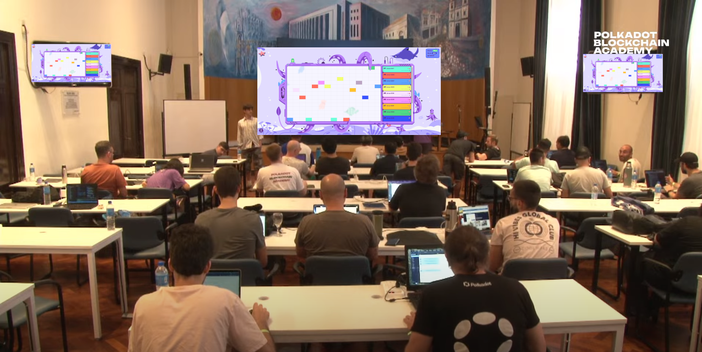

<!DOCTYPE html>
<html lang="en">

<head>
  <meta charset="utf-8" />
  <meta name="viewport" content="width=device-width, initial-scale=1.0, maximum-scale=1.0, user-scalable=no" />

  <title>ink! Workshop (First Day)</title>
  <link rel="shortcut icon" href="./../../assets/favicon.ico" />
  <link rel="stylesheet" href="./../../dist/reset.css" />
  <link rel="stylesheet" href="./../../dist/reveal.css" />
  <link rel="stylesheet" href="./../../assets/styles/PBA-theme.css" id="theme" />
  <link rel="stylesheet" href="./../../css/highlight/shades-of-purple.css" />

  <link rel="stylesheet" href="./../.././assets/styles/custom-classes.css" />

</head>

<body class="site">
  <header class="site-header">
    <!-- This logo is a link only on the watching server, not the production build -->
      
  </header>
  <main class="reveal">
    <article class="slides">
      <section  data-markdown><script type="text/template">


</script></section><section  data-markdown><script type="text/template">
<pba-cols>
<pba-col>

### Agenda

</pba-col>
<pba-col>

|          |        |                    |
| -------- | ------ | :----------------- |
| Today    | 1pm    | ink! Intro         |
|          | 2pm    | Activity           |
|          | 3:30pm | Hints for tomorrow |
|          |        | &nbsp;             |
| Tomorrow | 1pm    | We help you        |
|          | 2pm    | Game               |
|          | 3:30pm | Perfect Solutions  |

</pba-col>
</pba-cols>
</script></section><section  data-markdown><script type="text/template">

</script></section><section  data-markdown><script type="text/template">
## Components

<br/>

<div class="flex-container fragment">
<div class="left"> <!-- Gotcha: You Need an empty line to render MD inside <div> -->
<div style="text-align: center"> <center><h2><pre> game.contract </pre></h2></center> </div>
<ul>
<li>We deploy + run.</li>
<li>Runs game loop.</li>
<li>Invokes each player.</li>
<li>Determines the score.</li>
</ul>
</div>

<div class="left fragment"> <!-- Gotcha: You Need an empty line to render MD inside <div> -->
<div style="text-align: center"> <center><h2><pre> player.contract </pre></h2></center> </div>

<ul>
<li>Your job.</li>
</ul>
</div>
<div class="right fragment"> <!-- Gotcha: You Need an empty line to render MD inside <div> -->
<div style="text-align: center"> <center><h2><pre> frontend </pre></h2></center> </div>
<ul>
<li>On big screen during game.</li>
</ul>
</div>
</div>
</script></section><section  data-markdown><script type="text/template">
## The Process

1. 🧠 Create contract that plays on your behalf<!-- .element: class="fragment" data-fragment-index="1" -->
1. 🚀 Deploy contract to Rococo testnet <!-- .element: class="fragment" data-fragment-index="2" -->
1. 🤝 Register contract as player with game contract<!-- .element: class="fragment" data-fragment-index="3" -->
1. ️🎮 We start the game<!-- .element: class="fragment" data-fragment-index="4" -->
1. 📺️️ It runs for some minutes, we watch it on screen<!-- .element: class="fragment" data-fragment-index="5" -->
</script></section><section  data-markdown><script type="text/template">
## How the Game looks


<aside class="notes"><ul>
<li>Your player gets a random color assigned</li>
</ul>
</aside></script></section><section  data-markdown><script type="text/template">
## How the Game looks


</script></section><section  data-markdown><script type="text/template">
## How the Game looks


</script></section><section  data-markdown><script type="text/template">
## How to score?

- Use as little gas as possible to paint as many fields as possible.

<!-- .element: class="fragment" -->

- Stay within your gas budget.

<!-- .element: class="fragment" -->

- The later you manage to still paint a field the better you score.

<!-- .element: class="fragment" -->

- No overpainting! First player to paint a field owns it.

<!-- .element: class="fragment" -->
</script></section><section  data-markdown><script type="text/template">
## Basic Player Contract

```rust [1-2,19|3-4|7-10|12-17|1-19]
#[ink::contract]
mod player {
    #[ink(storage)]
    pub struct Player {}

    impl Player {
        #[ink(constructor)]
        pub fn new() -> Self {
            Self {}
        }

        /// Called during every game round.
        /// Return `(x, y)` coordinate of pixel you want to color.
        #[ink(message, selector = 0)]
        pub fn your_turn(&self) -> Option<(u32, u32)> {
            Some(1, 2)
        }
    }
}
```
</script></section><section  data-markdown><script type="text/template">
## How to play


</script></section><section  data-markdown><script type="text/template">
## How to play


</script></section><section  data-markdown><script type="text/template">
## How to play


</script></section><section  data-markdown><script type="text/template">
## How to play


</script></section><section  data-markdown><script type="text/template">
## Now (1)

[github.com/paritytech/squink-splash-beginner ➜ todo-1.md](https://github.com/paritytech/squink-splash-beginner/blob/main/todo-1.md)
</script></section><section  data-markdown><script type="text/template">
## Now (2)

[github.com/paritytech/squink-splash-beginner ➜ todo-2.md](https://github.com/paritytech/squink-splash-beginner/blob/main/todo-2.md)
</script></section><section  data-markdown><script type="text/template">
## 🕹️🎮 Let's play! 🕹️🎮

[https://splash.use.ink](https://splash.use.ink)
</script></section><section  data-markdown><script type="text/template">
## The Game Contract

> [`ink-workshop/game/lib.rs`](https://github.com/paritytech/ink-workshop/blob/main/game/lib.rs)

- `pub fn submit_turn(&mut self)`

<!-- .element: class="fragment" -->

- `pub fn board(&self) -> Vec<Option<FieldEntry>>`

<!-- .element: class="fragment" -->

- `pub fn gas_budget(&self) -> u64`

<!-- .element: class="fragment" -->

- `pub fn dimensions(&self) -> (u32, u32)`

<!-- .element: class="fragment" -->
</script></section><section  data-markdown><script type="text/template">
## Until Tomorrow 🧠

- Find a strategy for your player.<br/><br/>
- Use as little gas as possible to paint as many fields as possible.
- Stay within your gas budget.
- The later you manage to still paint a field, the better you score.<br/><br/>
- No overpainting! First player to paint a field owns it.
- [paritytech/squink-splash-advanced](https://github.com/paritytech/squink-splash-advanced)
</script></section><section  data-markdown><script type="text/template">
## How to test locally?

[paritytech/squink-splash-advanced](https://github.com/paritytech/squink-splash-advanced)
</script></section><section  data-markdown><script type="text/template">
## Hint: Playfield Dimensions

- Paint within the bounds of the playfield!
- Otherwise you wasted a turn.
</script></section><section  data-markdown><script type="text/template">
## Ideas

- You can call your own contract as often as you want!

<!-- .element: class="fragment" -->

- Random number

<!-- .element: class="fragment" -->

- Query which fields are free
  - Query game state via cross-contract call
  - Off-chain computation

<!-- .element: class="fragment" -->
</script></section><section  data-markdown><script type="text/template">
<!-- .slide: data-background="../../assets/img/6-FRAME/6.5-Smart_Contracts/ink/Questions_2.svg"" -->
</script></section>
    </article>
  </main>

  <script src="./../../dist/reveal.js"></script>

  <script src="./../../plugin/markdown/markdown.js"></script>
  <script src="./../../plugin/highlight/highlight.js"></script>
  <script src="./../../plugin/zoom/zoom.js"></script>
  <script src="./../../plugin/notes/notes.js"></script>
  <script src="./../../plugin/math/math.js"></script>
  <script>
    function extend() {
      var target = {};
      for (var i = 0; i < arguments.length; i++) {
        var source = arguments[i];
        for (var key in source) {
          if (source.hasOwnProperty(key)) {
            target[key] = source[key];
          }
        }
      }
      return target;
    }

    // default options to init reveal.js
    var defaultOptions = {
      controls: true,
      progress: true,
      history: true,
      center: true,
      transition: 'default', // none/fade/slide/convex/concave/zoom
      slideNumber: true,
      plugins: [
        RevealMarkdown,
        RevealHighlight,
        RevealZoom,
        RevealNotes,
        RevealMath
      ]
    };

    // options from URL query string
    var queryOptions = Reveal().getQueryHash() || {};

    var options = extend(defaultOptions, {"width":1400,"height":900,"margin":0,"minScale":0.2,"maxScale":2,"transition":"none","controls":true,"progress":true,"center":true,"slideNumber":true,"backgroundTransition":"fade"}, queryOptions);
  </script>


  <script>
    Reveal.initialize(options);
  </script>
</body>

</html>
